Non perché facciamo miracoli o false promesse, ma perché abbiamo un unico obiettivo: ristabilire l'equilibrio della pelle e la sua capacità di auto rigenerarsi.
Visto su:
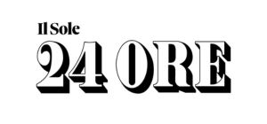
Se hai provato diversi cosmetici o routine e niente sembra funzionare, sei nel posto giusto.
Non perché facciamo miracoli o false promesse, ma perché abbiamo un unico obiettivo: ristabilire l'equilibrio della pelle e la sua capacità di auto rigenerarsi.
Quando la barriera cutanea è in squilibrio nessun prodotto cosmetico, anche il migliore, può darti i risultati che potrebbe e che desideri.
Con una pelle in squilibrio è come se tutto quello che applichi non riuscisse a "penetrare" e lavorare per e con la tua pelle. Dopo qualche ora la pelle tira di nuovo e niente cambia realmente.
Niente cambia realmente
Con il passare degli anni, e ancora di più in peri-menopausa e post menopausa, il ricambio naturale della nostra pelle rallenta, rendendo lo strato superficiale più rigido, ruvido e spesso.
Questo si traduce in:
Pelle spenta
Rughe più evidenti
Perdita di compattezza e tono

L'istinto, incoraggiato dal trend del momento, è levigare ed esfoliare con peeling chimici, retinoidi e scrub di vario tipo, ma così facendo non facciamo altro che indebolire un equilibrio già compromesso.
La pelle in menopausa, ma già da 10 anni prima, diventa più sottile, più sensibile ai raggi solari, più reattiva, dando chiari segnali di allarme, a cui seguono rughe, pelle stanca, spenta e sempre meno tonica.
Il primo e più importante, se desideri un reale miglioramento e una pelle più longeva, prima di qualsiasi prodotto specifico per rughe e tono, dovrebbe essere ristabilire l'equilibrio e il naturale ricambio cellulare.
Sarà proprio grazie al nuovo equilibrio che la pelle ritrova la sua naturale capacità di auto rigenerarsi.
Il Kit di Normalizzazione Fisiologica
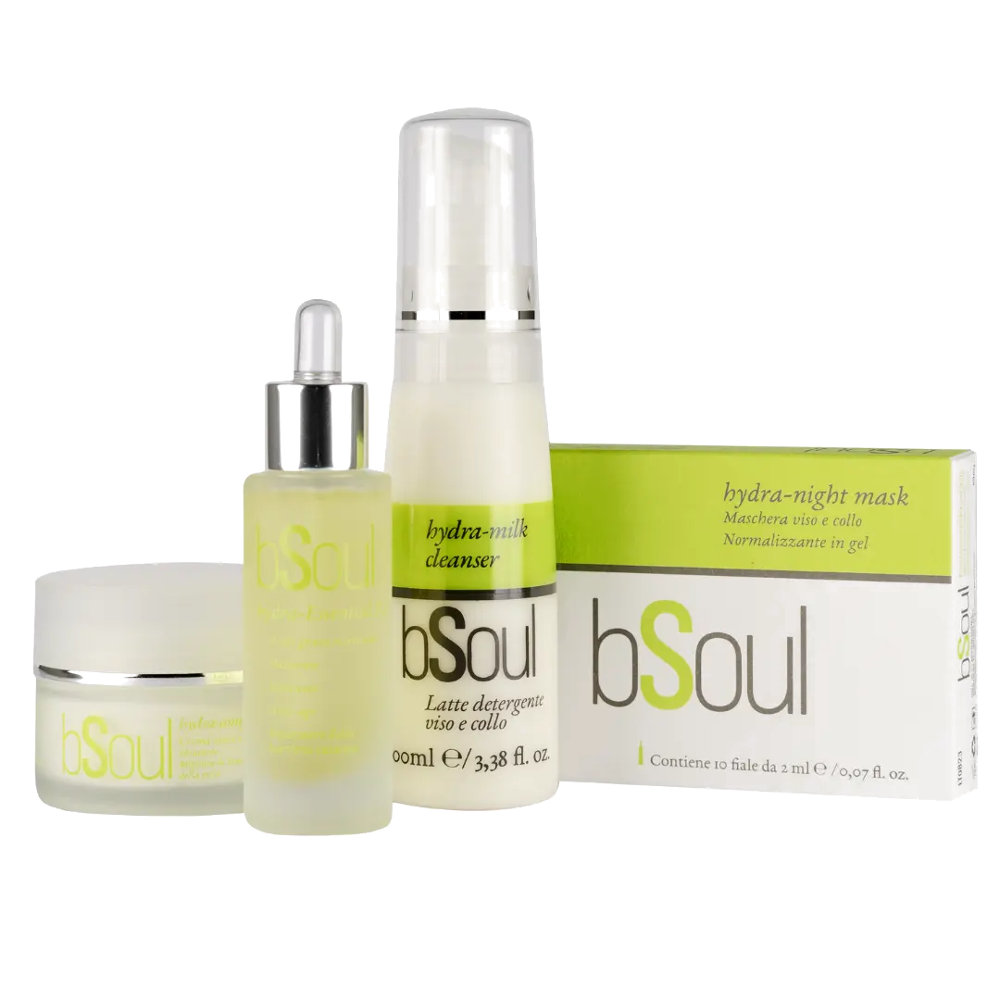
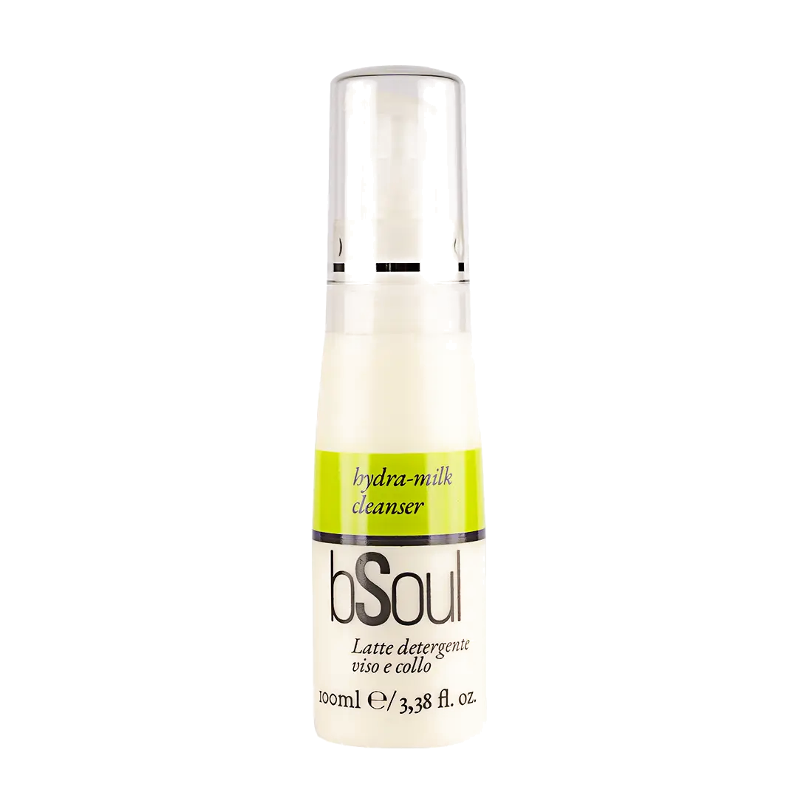
Hydra Milk Cleanser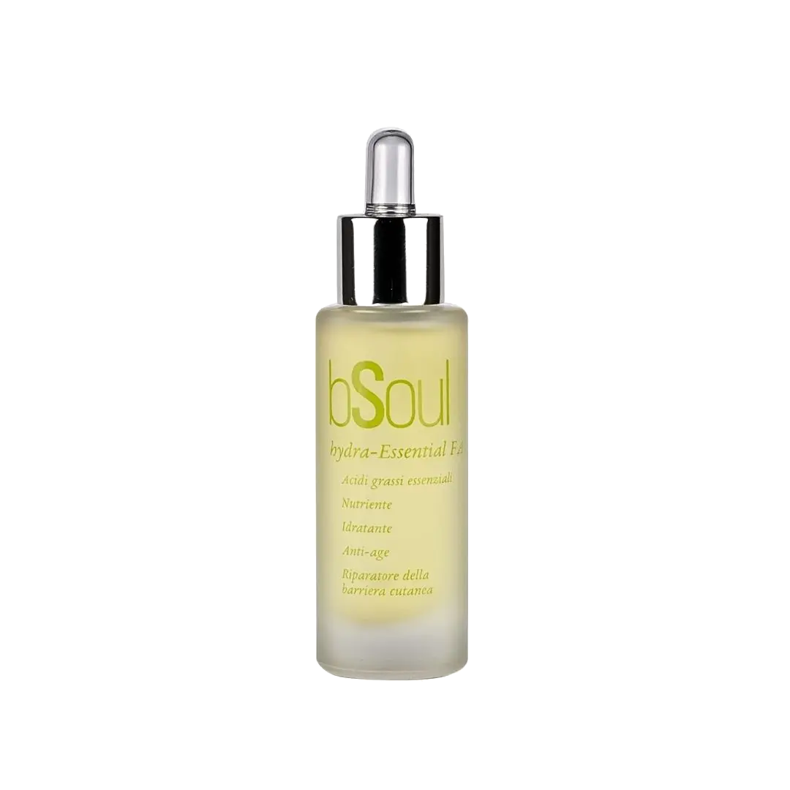
Hydra Essential FA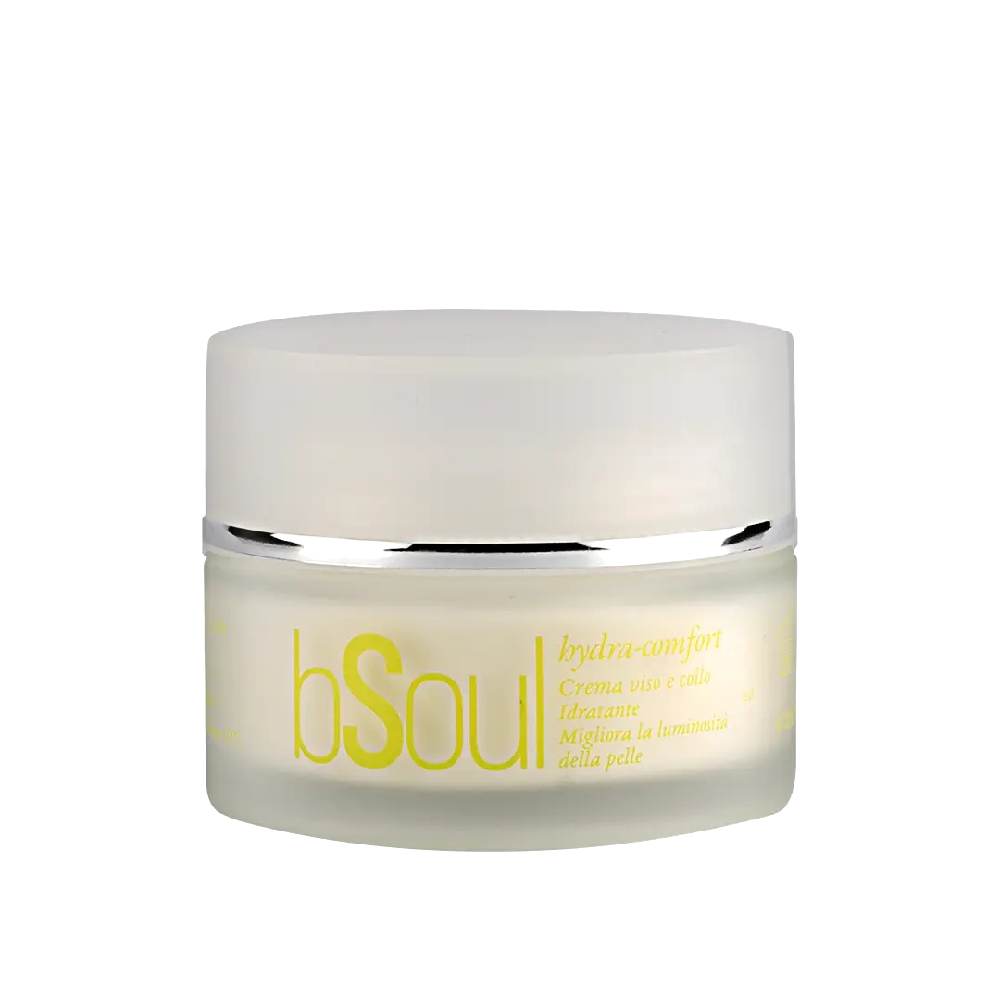
Hydra Comfort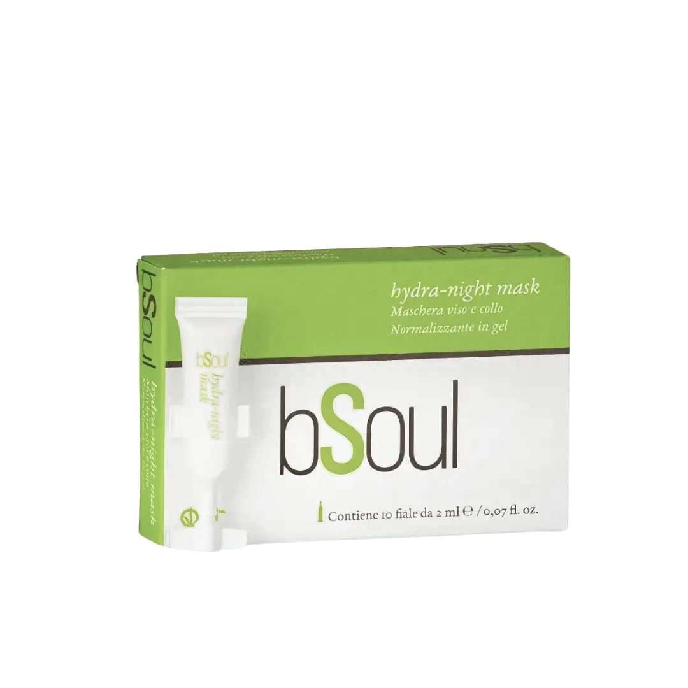
Hydra Night MaskCosa succede durante la normalizzazione fisiologica?
Primi 7 giorni
Senti la pelle che inizia a rispondere diversamente.
Dal 7° al 30° giorno
La pelle fa il suo primo nuovo strato e appare piu' morbida e luminosa.
Dal 30° al 60° giorno
La pelle sara' rigenerata.
Dal 60° giorno inizia il cambiamento strutturale della pelle. Dopo la normalizzazione fisiologica la tua pelle e' pronta alla fase 2.
Nella fase 2 ci focalizzeremo sul tuo tipo di invecchiamento. Non invecchiamo tutte nello stesso modo: alcune hanno piu' rughe, altre piu' cedimenti, oppure alcune aree invecchiano prima delle altre zone del viso.


Fin dal primo giorno di normalizzazione sei seguita da una Beauty Expert con esperienza pluriennale nel mondo beauty, in particolare sull'invecchiamento cutaneo.
Ti seguira' passo passo indicandoti anche le migliori routine di auto-massaggio, video tutorial semplici da eseguire a casa, 5 minuti al giorno durante la routine cosmetica.
Non sei mai sola: ogni dubbio, ogni passaggio ha una risposta pronta e personalizzata per 2 mesi.
Puoi comunicare con la tua Beauty Expert via:
Questa e' una domanda frequente, poiche' un approccio nuovo talvolta fa sembrare le cose un po' piu' complicate. Ma e' l'esatto contrario!
Nel kit troverai:
La detersione fisiologica
Il siero riequilibrante
La crema trasformista
Il prodotto "pigro"
Dalla parte dell'evidenza, da sempre
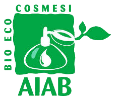
A supporto abbiamo 4 diversi studi clinici indipendenti, oltre a numerose recensioni su Trustpilot e video testimonianze.
Da sempre abbiamo scelto di non seguire il trend delle influencer, ma di usare clienti e donne comuni che davvero usano i prodotti.
Molti oggi promettono risultati veloci e a volte ci riescono, ma ogni volta altrettanto velocemente la pelle torna come prima, se non peggio!
Il vero risultato si costruisce giorno dopo giorno, rispettando i tempi e il naturale equilibrio della pelle.
La pelle non cambia in un giorno, ma quando cambia davvero, non torna piu' indietro.
0
Recensioni Trustpilot
0
A 5 stelle
0
Studi clinici indipendenti
0
Anni di fedelta' clienti
Cosa dicono le nostre clienti
"La mia pelle e' rinata"
"Finalmente un metodo che funziona"
"Non pensavo potesse cambiare cosi'"
"Le mie amiche mi chiedono cosa uso"
"Ho eliminato 3 creme dalla routine"
"La consulente mi ha cambiato la vita"
"A 58 anni mi sento bellissima"
"Dopo il primo mese vedevo gia' risultati"
"Prodotti naturali che funzionano davvero"
"Non tornerei mai indietro"
"La mia pelle e' rinata"
"Finalmente un metodo che funziona"
"Non pensavo potesse cambiare cosi'"
"Le mie amiche mi chiedono cosa uso"
"Ho eliminato 3 creme dalla routine"
"La consulente mi ha cambiato la vita"
"A 58 anni mi sento bellissima"
"Dopo il primo mese vedevo gia' risultati"
"Prodotti naturali che funzionano davvero"
"Non tornerei mai indietro"
"Uso bSoul da più di tre anni e la mia pelle sensibile ringrazia. Finalmente non ho più la sensazione fastidiosa di pelle che tira."
Silvia Rossi
Verificata su Trustpilot
"Ho scoperto bSoul circa 5 anni fa, e ha davvero dato una svolta ai miei problemi di pelle che avevo da anni!"
Stefania Paoloni
Verificata su Trustpilot
"Ho conosciuto bSoul quando ero reduce di una dermatite periorale e ho assistito a una specie di miracolo."
Annamaria
Verificata su Trustpilot
"Uso i prodotti bSoul da 10 anni. Ho una pelle migliore adesso che ho 46 anni di quando ne avevo 25."
Blu
Verificata su Trustpilot
"Uso i prodotti bSoul da 4 anni e devo dire che sono tutti veramente ottimi, nessuno escluso."
Barbara Carinci
Verificata su Trustpilot
"Da anni uso questi prodotti fantastici. La mia pelle è cambiata: più elastica, più luminosa e anche qualche ruga è sparita."
Rita Venturino
Verificata su Trustpilot
"Dal 2018 sono fedelissima alla linea bSoul, ho reso la mia pelle sana e luminosa."
Lorena M.
Verificata su Trustpilot
"Ho iniziato ad usare i prodotti bSoul quasi 10 anni fa e sono ormai una cliente affezionata."
Silvia Vivian
Verificata su Trustpilot
"Il mio percorso con bSoul è iniziato 5 anni fa. La mia pelle ha ritrovato nuova vita."
Carlotta
Verificata su Trustpilot
"Uso i prodotti bSoul da circa 5 anni e mi trovo benissimo. Sono i primi e unici prodotti che non mi stancano."
Danja
Verificata su Trustpilot
"Utilizzo i prodotti bSoul da circa 1 anno con ottimi risultati per la mia pelle matura."
Jose Mascia
Verificata su Trustpilot
"Con bSoul ho trovato la soluzione ideale per la mia pelle. I prodotti sono ottimi."
Piera Mancini
Verificata su Trustpilot
"Uso bSoul da più di tre anni e la mia pelle sensibile ringrazia. Finalmente non ho più la sensazione fastidiosa di pelle che tira."
Silvia Rossi
Verificata su Trustpilot
"Ho scoperto bSoul circa 5 anni fa, e ha davvero dato una svolta ai miei problemi di pelle che avevo da anni!"
Stefania Paoloni
Verificata su Trustpilot
"Ho conosciuto bSoul quando ero reduce di una dermatite periorale e ho assistito a una specie di miracolo."
Annamaria
Verificata su Trustpilot
"Uso i prodotti bSoul da 10 anni. Ho una pelle migliore adesso che ho 46 anni di quando ne avevo 25."
Blu
Verificata su Trustpilot
"Uso i prodotti bSoul da 4 anni e devo dire che sono tutti veramente ottimi, nessuno escluso."
Barbara Carinci
Verificata su Trustpilot
"Da anni uso questi prodotti fantastici. La mia pelle è cambiata: più elastica, più luminosa e anche qualche ruga è sparita."
Rita Venturino
Verificata su Trustpilot
"Dal 2018 sono fedelissima alla linea bSoul, ho reso la mia pelle sana e luminosa."
Lorena M.
Verificata su Trustpilot
"Ho iniziato ad usare i prodotti bSoul quasi 10 anni fa e sono ormai una cliente affezionata."
Silvia Vivian
Verificata su Trustpilot
"Il mio percorso con bSoul è iniziato 5 anni fa. La mia pelle ha ritrovato nuova vita."
Carlotta
Verificata su Trustpilot
"Uso i prodotti bSoul da circa 5 anni e mi trovo benissimo. Sono i primi e unici prodotti che non mi stancano."
Danja
Verificata su Trustpilot
"Utilizzo i prodotti bSoul da circa 1 anno con ottimi risultati per la mia pelle matura."
Jose Mascia
Verificata su Trustpilot
"Con bSoul ho trovato la soluzione ideale per la mia pelle. I prodotti sono ottimi."
Piera Mancini
Verificata su Trustpilot
I miglioramenti constatati nella prima fase sono il risultato di un accurato sistema di monitoraggio clinico, effettuato su 40 donne tra i 35 e i 45 anni durante il corso di due mesi.
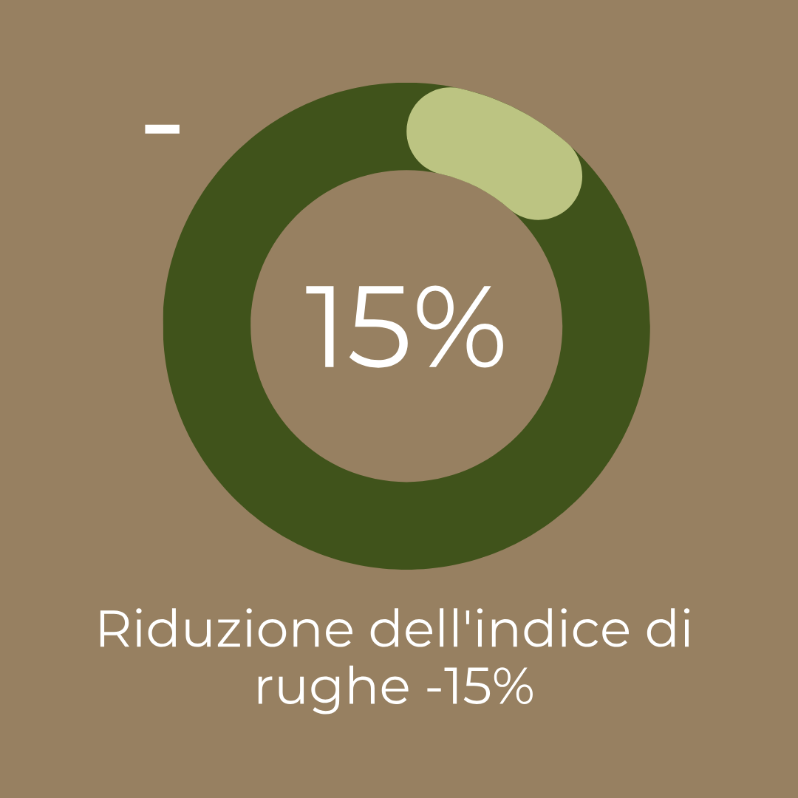
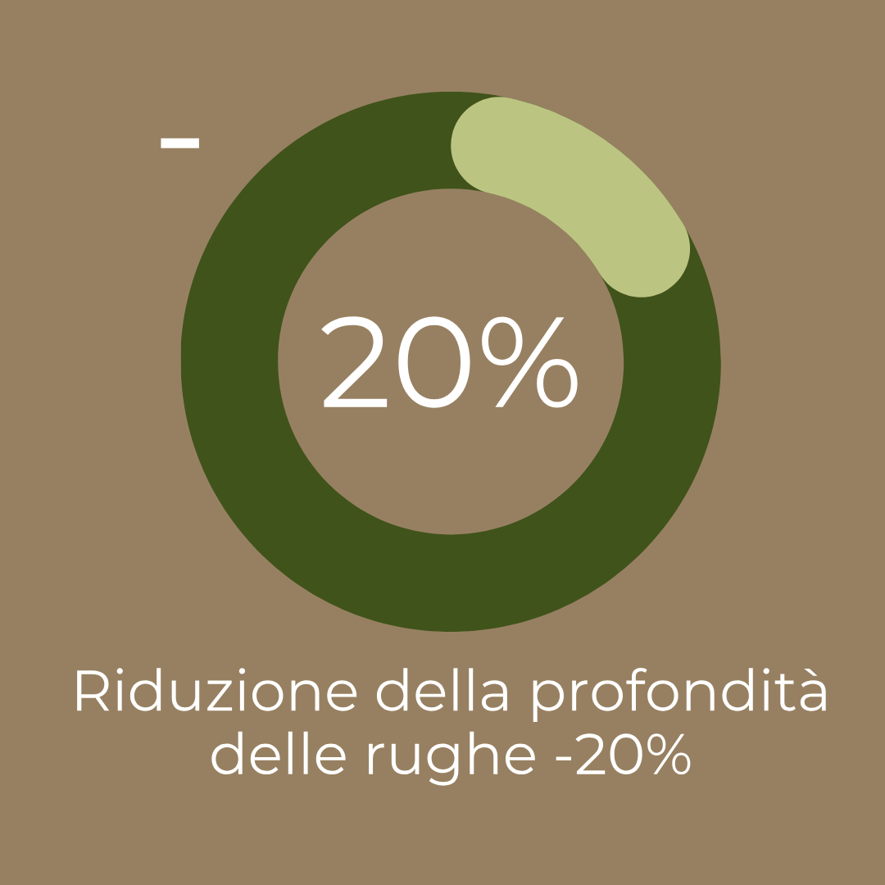
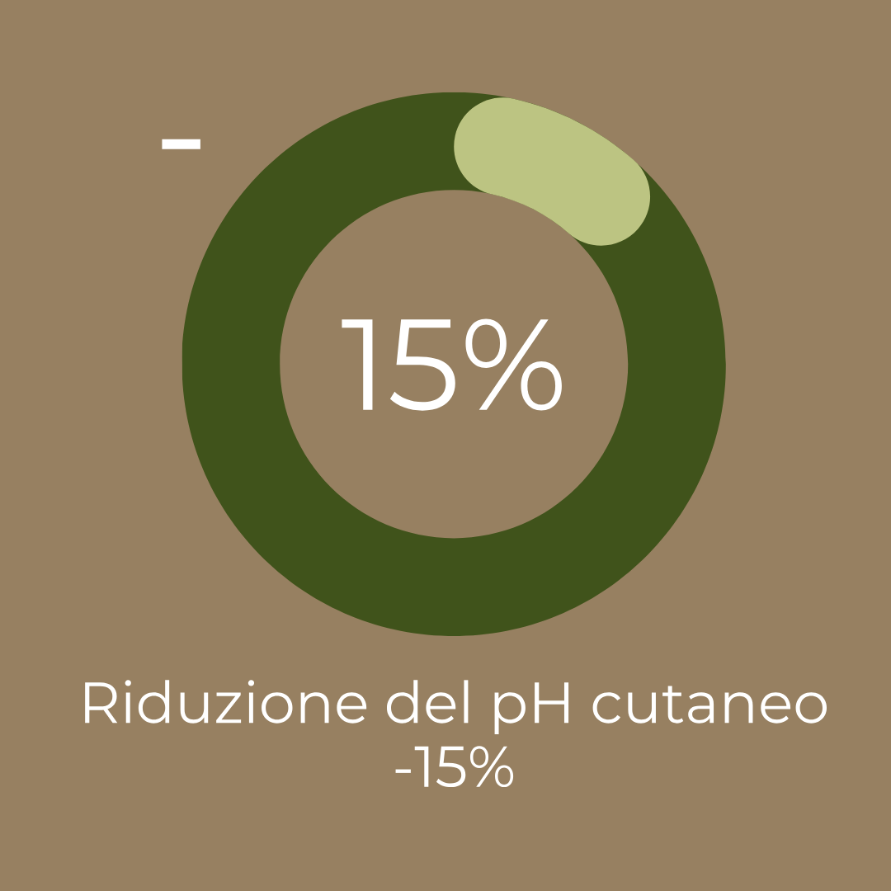
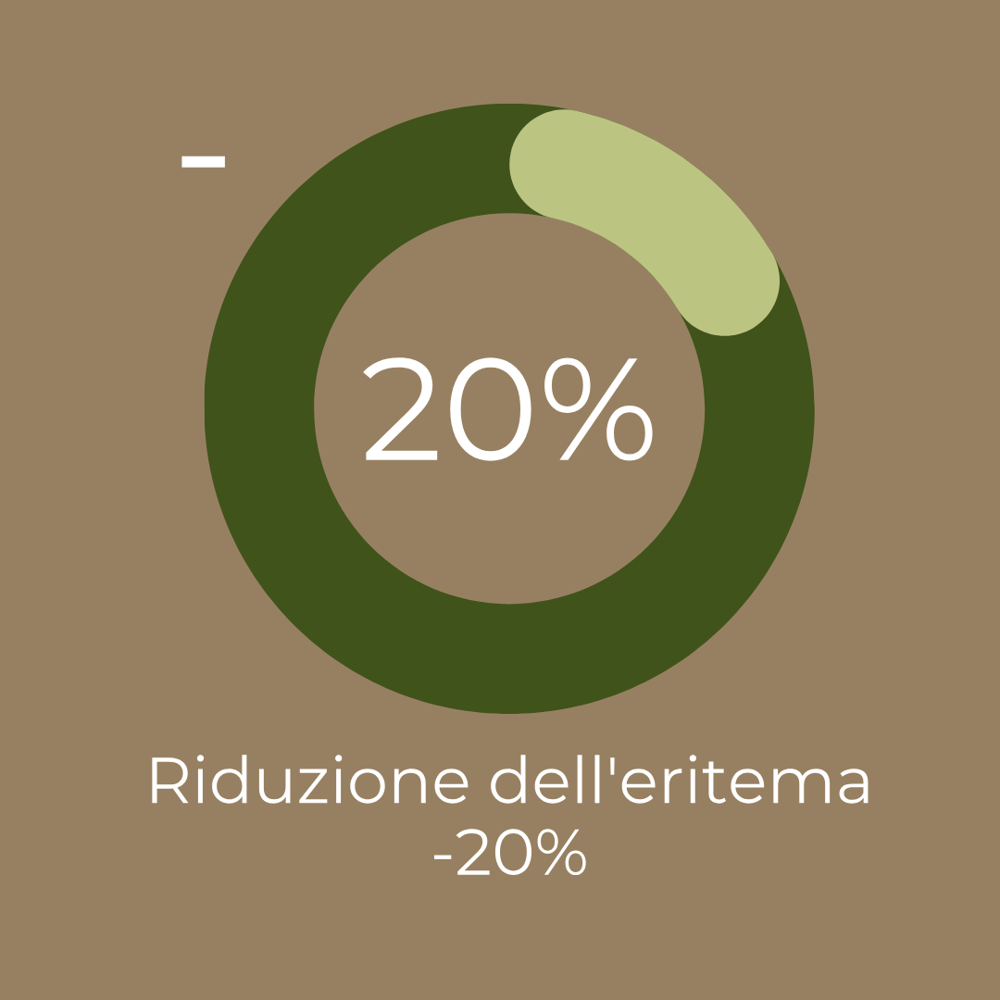
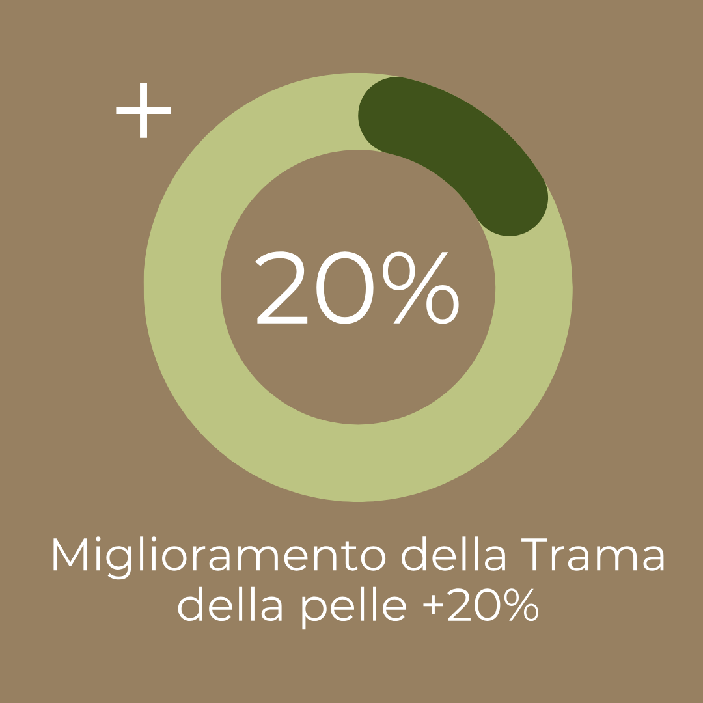
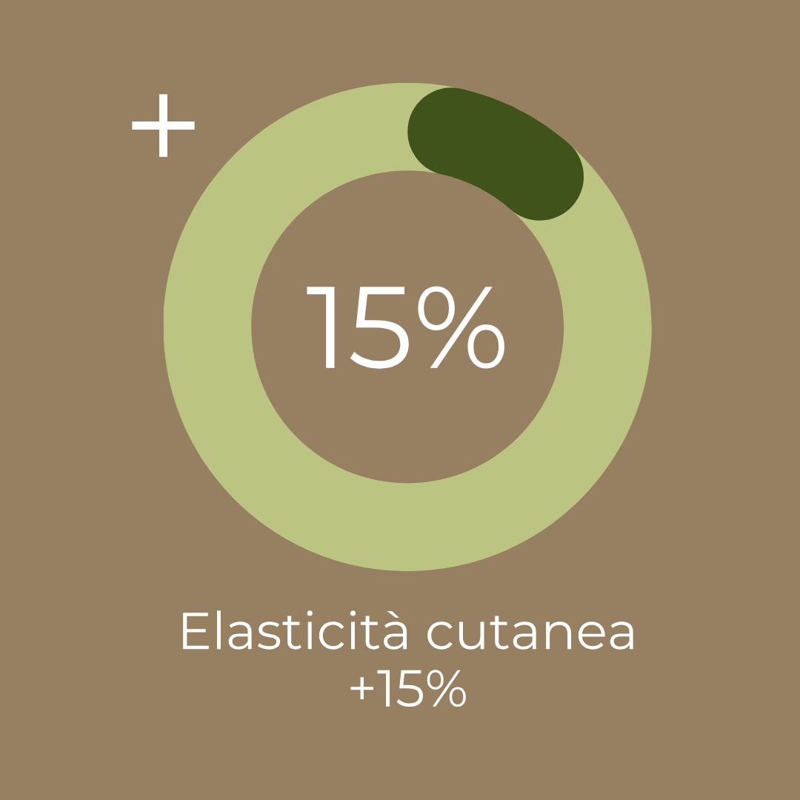
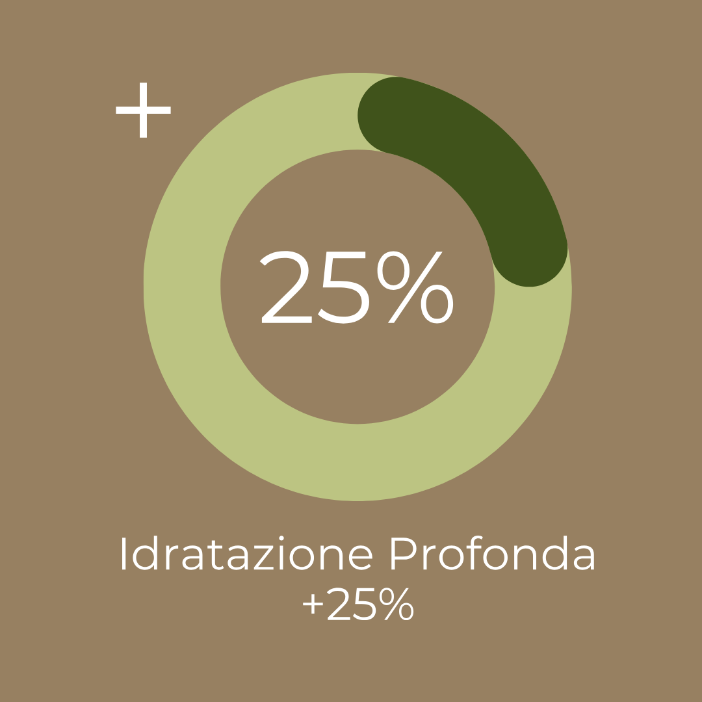
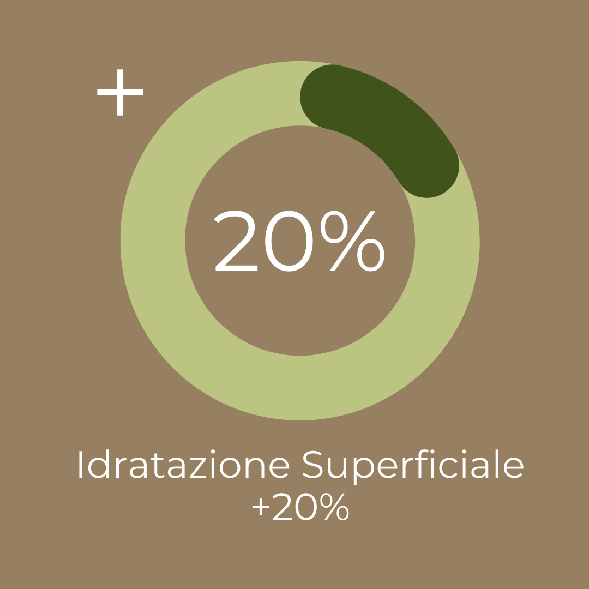
Questi sono risultati reali e duraturi — non effetti temporanei che svaniscono dopo essersi lavate il viso.

Un trattamento serio, che non promette miracoli, ma risultati. L'obiettivo della tua pelle e' l'equilibrio.
Provare una crema non e' risolvere un problema: vuol dire mettere un cerotto. Il nostro approccio restituisce alla pelle la capacita' di lavorare per se stessa.
E' solo il primo step: riportando la pelle in equilibrio, tutte le fasi successive diventano esponenzialmente piu' efficaci.
Inizia il tuo percorso
La Fondatrice
Il mio nome e' Martina Bindi, sono un'estetista professionista con lunga esperienza alle spalle, il desiderio di conoscere tutto cio' che riguarda la bellezza e la cura della pelle.
Formulando i prodotti e le routine bSoul ho messo in campo le mie conoscenze scientifiche e la mia esperienza diretta con tantissimi prodotti e trattamenti.
Mettere tutto cio' a disposizione delle altre donne e' stata la mia rivincita piu' grande.
Perche' quando la pelle sta bene davvero, il cambiamento non e' solo visibile: si sente.
E cambia anche il modo in cui ti guardi.

E' il momento di ottenere la routine che ha gia' cambiato la pelle di tantissime donne, in modo naturale.
Inizia da quiPreferisci essere contattata per avere piu' informazioni?
Siamo felici di rispondere a tutte le tue domande:
bSoul
Rispondi a poche domande: una Beauty Expert bSoul ti aiutera' a capire da dove partire con consigli pratici su misura.
IniziaRichiede 3 minuti
Un mondo di bellezza a tua disposizione
Il nostro team e' a tua disposizione!
344 1845800: Assistenza WhatsApp per logistica, ordini e sito (solo messaggi scritti e vocali)
327 3144258: Analisi della pelle WhatsApp con Serena (solo messaggi scritti e vocali)
0572 520961: Servizio telefonico clienti — lunedi'/venerdi' — 9:00-16:00